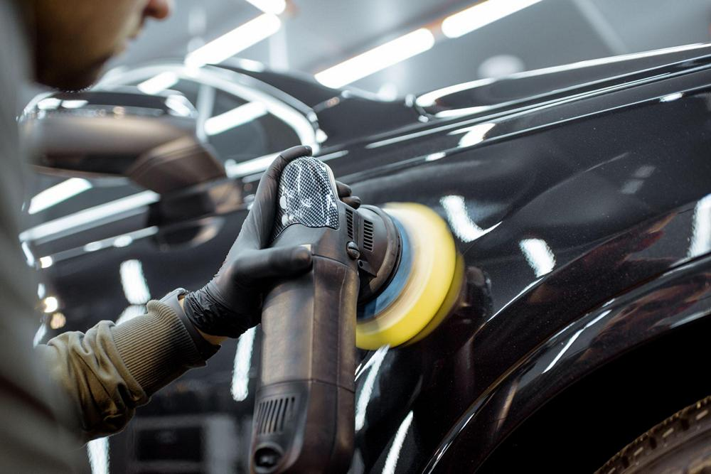

Полировка кузова автомобиля
Задача нашей студии – не просто отполировать Ваш автомобиль, а полностью восстановить и, что не менее важно, сохранить его внешний вид. Говоря о “внешнем виде” подразумевается каждая деталь: от лакокрасочного покрытия, до колёс и фар. Для достижения максимально возможного результата в каждом конкретном случае на выбор предлагается полировка кузова автомобиля по любой из нескольких комплексных программ. Для случаев, когда необходимо произвести воздействие только на один или несколько элементов, предлагается локальная полировка кузова автомобиля. Данная услуга актуальна для подготовки элемента к оклейке пленкой или для полировки отдельных царапин. Приоритетная задача при проведении любой из программ по полировке авто – максимальное сохранение лакокрасочного покрытия. В случае, когда полное устранение повреждения означает снятие слишком большого слоя лака, мы стараемся произвести наименьший ущерб покрытию Вашего автомобиля. В таких случаях фирменная технология позволяет произвести полировку автомобиля таким образом, что царапины становятся заметны только под источником света и не заметны невооруженным глазом. Для клиентов, желающих поддерживать великолепное состояние автомобиля в течение долгих лет, действует система сервисного обновления защитного покрытия.
Наши преимущества:
Стоимость полировки:
| Программа | Легковые | Внедорожники |
| Керамическое покрытие лайт 1 слой | 16 000 | 18 000 |
| Керамическое покрытие 9Н 2 слоя + лайт 1 слой | 33 000 | 36 000 |
| Керамическое покрытие 9Н 4 слоя + лайт 1 слой | 45 000 | 65 000 |